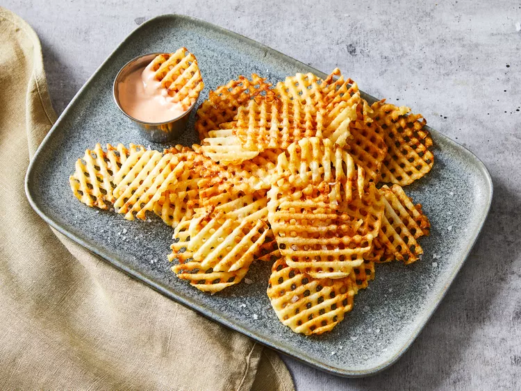

Home
Waffle Fries

Description
These homemade waffle fries are crispy and beautifully on the outside, but
perfectly soft and fluffy on the inside.
Make this homemade waffle fry recipe with just three ingredients: russet
potatoes (peeled), peanut or vegetable oil (for frying), and salt. You can
use seasoned salt for extra bold flavor.
Ingredients
Waffle Fries
- 2 pounds russet potatoes, peeled
- peanut or vegetable oil for frying
- 1/2 teaspoon salt or desired seasoning
Zippy Fry Sauce
- 1/2 cup mayonnaise
- 2 tablespoons ketchup
- 1 teaspoon dill pickle brine (from a jar of pickles)
- 1 teaspoon Sriracha sauce or bottled chipotle hot sauce
Steps
-
Gather all ingredients. Preheat oven to 200 degrees F (400 degrees C).
Set two wire racks atop paper towels.
-
Fill a large bowl with ice water. Using a mandoline with a waffle blade
set to 1/4-inch, slice potatoes crosswise, then rotate 90° and make
another slice for each waffle fry (you can also use a crinkle cutter
using the same process).
- Add cut waffle fries to the ice water as they are done.
-
In a large heavy saucepan, add 2 inches of oil. Clip a candy/oil
thermometer to the side of the pan. Heat oil over medium heat to 310
degrees F (155 degrees C).
- Drain waffle fries and blot dry with paper towels.
-
Working in batches, fry waffle fries 4 to 5 minutes. They should just
cook through at this point, but not brown.
- Remove from oil with a slotted spoon and place on wire racks.
-
Increase oil temperature to 375 degrees F (190 degrees C). Add waffle
fries in batches and cook 1 to 2 minutes until golden brown.
-
Drain on paper towels, and sprinkle with salt. Transfer cooked fries to
the oven to keep warm while frying remaining waffle fries.
- Serve with Zippy Fry Sauce.